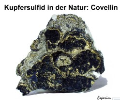

Du hast gelernt, dass Metalle in der Natur oft als Erze vorkommen. Viele dieser Erze sind Verbindungen von Metallen mit Sauerstoff (Oxide). Es gibt aber auch eine andere wichtige Gruppe, die sogenannten Sulfide. In der Bilderreihe siehst du eine kleine, aber feine Auswahl von Sulfiden.
Zinksulfid
Eisensulfid ("Katzengold")
Kupfersulfid
Mangansulfid
Antimonsulfid
Quecksilbersulfid (Zinnober)
Bleisulfid (Bleiglanz)
✒️Übernimm die folgende Beobachtung in dein Heft: Viele Metalle liegen in der Natur als Verbindung in Sulfiden vor.
Fragestellung
✒️Übernimm die folgende Fragestellung aus dem Material in dein Heft: Was sind Sulfide und wie entstehen sie?
Analyse des Problems
✒️Lies die Seiten 27 und 30 im Buch.
Frage 1/4: Welche Eigenschaft unterscheidet Eisen und Schwefel vor der Reaktion am deutlichsten?
Hypothese
✒️Führe folgende Aufgaben aus dem Material durch:
1. Beantworte die Fragestellung mithilfe der Informationen auf den Seiten 27 und 30.
2. Übernimm die Abbildung 1 von Seite 30 in deine Unterlagen.
a. Lies dir die Informationen zur Eisensulfid-Synthese (Seite 27) nochmal durch und ordne jedem der fünf Begriffe aus der Abbildung mindestens ein Beispiel aus der Eisensulfid-Synthese zu. Hilfe: zum Begriff "Stoffe" gehören "Eisen", "Schwefel" und "Eisensulfid".
b. Erstelle passende Skizzen.
Frage 2/4: Welche der folgenden Aussagen fasst die Hypothese am besten zusammen?
Überprüfung: Das Experiment
✒️Gib in einem Satz an, was gemacht werden muss, um die Hypothese zu überprüfen. (Siehe Versuch 1 auf Seite 27)
Reflexionsfrage: Welcher Schritt ist entscheidend, um die Reaktion zu starten?
Ergebnis
✒️Beschreibe in Stichpunkten die Ergebnisse des Versuchs. (Was hast du wahrgenommen?)
Frage 3/4: Welche Beobachtung ist der stärkste Hinweis darauf, dass das Eisen nicht mehr in seiner ursprünglichen Form vorliegt?
Deutung
✒️Deute deine Ergebnisse. (Wie erklärst du dir, was du wahrgenommen hast?) Gib die Reaktionsgleichung als Wortgleichung an und vollende die "Dalton"-Gleichung.
Frage 4/4: Wie deutet man die Beobachtungen korrekt?
Hinweis für Experten: In einem echten Experiment reagiert oft nicht das gesamte Eisen. Es kann also sein, dass dein Reaktionsprodukt noch leicht magnetisch ist, weil es Reste von nicht umgesetztem Eisen enthält. Das ändert aber nichts an der grundsätzlichen Deutung, dass ein neuer, nicht-magnetischer Stoff entstanden ist.